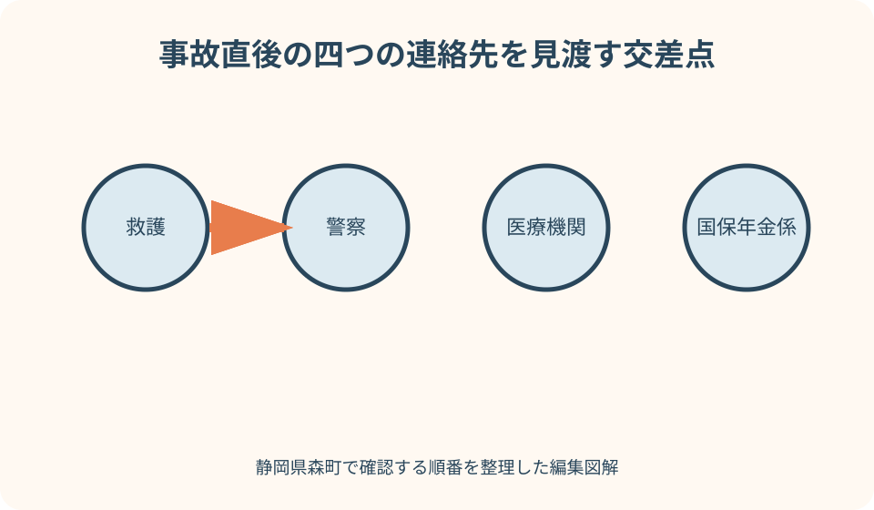
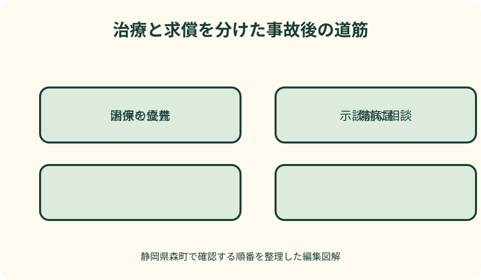

健康・医療・保険｜最終確認 2026-08-10
静岡県森町の国民健康保険｜交通事故など第三者行為の届出
交通事故など相手方の行為によるけがで国民健康保険を使うときは、通常の受診だけで終わりません。治療を優先しながら、警察、医療機関、森町国保年金係へ事故の事実を伝え、第三者行為による傷病届などを提出します。加害者側と示談する前に保険者へ相談することも重要です。

編集イラスト結論：治療を優先し、示談より先に森町へ連絡する
交通事故に遭った直後は、まず安全な場所を確保し、負傷者の救護と119番、警察への通報を優先します。けがが軽いと感じても、後から症状が出ることがあります。医療上の判断は自己判断で済ませず、必要な受診につなげます。
受診時には、交通事故、傷害、犬にかまれたなど、相手方の行為による負傷であることを医療機関へ伝えます。森町国保の資格を示すだけで通常の病気と同じ処理になるとは限りません。事故日と相手方の有無を受付へ伝えます。
森町公式は、第三者の行為による医療費は原則として加害者が負担すべきものの、賠償が遅れる場合などには一時的に国保で治療を受けられると説明しています。その場合、森町が立て替えた保険給付分を加害者側へ請求するため、被保険者の届出が必要です。
加害者や損害保険会社から示談案を示されても、署名や治療費の受領を急ぎません。静岡県国民健康保険団体連合会は、示談によって健康保険を使えなくなる場合があるため、示談前に保険者へ相談するよう案内しています。森町国保年金係へ先に状況を伝えます。
第三者行為は交通事故だけではない
第三者行為とは、本人以外の人や事業者などの行為によってけがや病気が生じた場面を指します。静岡県国保連合会は、交通事故のほか、けんか、犬にかまれた事故、食中毒などを例示しています。相手が自動車保険へ加入している場合だけの制度ではありません。
自転車同士、自転車と歩行者の事故でも、相手方がいる負傷なら届出の対象になり得ます。車を使っていないから第三者行為ではないと決めず、事故の状況を森町へ説明します。個人賠償責任保険などが関係する場合もあります。
同乗中の単独事故では、運転者と負傷した同乗者の関係により第三者行為となることがあります。親族間の事故、私有地内の事故、相手の特定が難しい事故も、家族の判断で対象外とせず国保年金係へ確認します。
仕事中や通勤途中のけがは、労災保険が優先される可能性があります。静岡県国保連合会も、仕事上のけがや故意によるけがなどは健康保険を使えない場合があると案内しています。受診先、勤務先、労働基準監督署など適切な窓口へ事故状況を伝えます。
事故直後に記録するのは、過失割合ではなく事実
事故記録には、発生日時、場所、天候、進行方向、信号、負傷者、救急搬送先、警察への届出時刻を書きます。道路上で撮影する場合は二次事故を避け、安全が確保できる範囲に限ります。けが人の救護より撮影を優先しません。
相手方の氏名、住所、連絡先、車両番号、加入保険会社を確認できる範囲で記録します。免許証などの画像を家族の共用チャットへ不用意に送らず、必要な関係者だけが見られる場所へ保管します。
その場で過失割合を決めたり、全面的な責任を認める文書へ署名したりしません。事故状況の事実と、法律上の責任や損害額の評価は別です。相手方と意見が違っても、口論を続けず警察や保険会社へ事実を伝えます。
目撃者がいる場合は、連絡先を尋ねられる状況か確認します。防犯カメラやドライブレコーダーの記録は上書きされることがあるため、保全方法を機器説明書や保険会社へ確認します。データを編集せず、原本を残します。
警察・医療機関・国保年金係の役割を分ける
警察への届出は、事故の記録と交通事故証明書の取得につながります。事故当事者だけで話し合って警察へ届けないと、後日、証明書を取得できないことがあります。負傷がある場合は、その事実を警察へ正確に伝えます。
医療機関は、けがの診断と治療を行い、診療記録や領収書を発行します。医療機関は過失割合や最終的な賠償額を決める場所ではありません。事故原因を受診時に伝え、いつからどの症状があるかを医師へ説明します。
森町国保年金係は、森町国保を使う場合の届出を受け、保険給付と第三者への求償に必要な手続きを案内します。事故の法的責任をすべて代理で判断する窓口ではありませんが、国保利用前後の相談先です。
損害保険会社は契約と事故状況に基づき対応します。相手方保険会社が書類作成を支援する場合もありますが、被保険者本人の森町への届出義務がなくなると自己判断しません。誰が何を提出するかを森町へ確認します。
森町へ電話するときに伝える七項目
電話の前に、被保険者氏名、生年月日、事故日、事故種類、受診先、相手方の有無、損害保険会社の連絡状況を一枚にします。資格番号などを安全に確認できる書類も手元へ置きます。
最初の電話では、書類が全部そろっていなくても構いません。静岡県国保連合会は、傷病届をすぐ提出できないときは、まず電話等で事故状況を知らせ、後日できるだけ早く提出するよう案内しています。
森町へは「交通事故で森町国保を使って受診した」「警察へ届出済み」「損害保険会社は未定」のように、確定した事実だけを伝えます。相手方の過失や示談見込みを推測で断定しません。
電話の記録には、日時、担当部署、伝えた内容、必要と言われた書類、提出先、次回連絡日を書きます。家族が代理で連絡する場合は、本人との関係と本人の同意、どこまで説明を受けられるかを確認します。

第三者行為による傷病届の書類を一つずつ確認する
静岡県国保連合会の様式ページには、被保険者が提出する書類として、第三者行為による傷病届、事故発生状況報告書、念書、誓約書、人身事故証明書入手不能理由書などが掲載されています。すべての事故で同じ組合せになるとは限らないため、森町の指示を確認します。
交通事故では交通事故証明書の写しも案内されています。証明書が発行されていない場合は、人身事故証明書入手不能理由書が必要となる場合があります。書類がないから事故を隠すのではなく、取得できない理由を森町へ伝えます。
事故発生状況報告書は、道路形状、信号、進行方向、接触位置などを図と文章で示す書類です。記憶が曖昧な箇所を推測で埋めず、「不明」「確認中」と記せるか提出先へ尋ねます。警察や保険会社へ伝えた内容と食い違わないよう資料を照合します。
念書や同意書、誓約書は、国保が加害者側へ求償するための権利や情報確認に関係します。意味を読まずに署名せず、分からない欄は森町へ質問します。相手方や保険会社へ原本を渡す前に、提出先を確かめます。
示談前に国保へ相談する理由
国保で第三者行為の治療を受けると、森町は本来加害者が負担する保険給付分を一時的に立て替え、後から加害者本人や自賠責・任意保険等へ請求します。この求償に、被害者が持つ損害賠償請求権が関係します。
被害者が治療費を含めて示談し、請求権を放棄したような内容になると、国保が加害者側へ請求できる範囲へ影響する場合があります。そのため、静岡県国保連合会は、加害者から治療費を受け取ったり示談したりする前の相談を求めています。
示談は、署名した書面だけを指すとは限りません。金銭を受け取る、今後請求しないと約束するなどのやり取りが影響する可能性があります。相手方から提案を受けたら、内容を森町と自分側の保険会社・専門家へ見せてから判断します。
この記事は個別事故の示談内容や過失割合を判断するものではありません。負傷が長引く、損害が大きい、相手方と争いがある場合は、森町の暮らしの相談窓口に掲載される法律相談や、加入保険の相談先などを確認します。
交通事故以外では証明と連絡先を置き換える
犬にかまれた場合は、傷の処置と受診を優先し、飼い主、発生場所、犬の特徴、発生時刻を記録します。交通事故証明書はありませんが、第三者行為として別の資料が必要になる可能性があります。森町国保年金係へ事故種類を具体的に伝えます。
森町の犬の飼い方ページには、迷い犬について西部保健所、袋井警察署森分庁舎、森町生活環境係の連絡先が示されています。所有者不明の犬の場合は、安全を確保し、自分で捕まえようとせず、関係先へ相談します。
けんかや傷害事件では、加害者との直接連絡で危険が増す場合があります。警察への相談と安全確保を優先し、住所や治療先を相手方へ不用意に伝えません。国保の書類作成は、警察や支援機関の助言も受けながら進めます。
食中毒が疑われる場合は、同じ食事をした人、店舗、日時、症状、受診先を記録します。原因を自分で断定せず、医療機関や保健所の調査に協力します。店舗との返金交渉と国保への第三者行為届を同じものとして扱いません。
介護サービスが必要になった場合は別の届出も確認する
事故後のけがで要介護・要支援認定を受け、介護保険サービスを利用する場合、医療保険の届出だけで終わらないことがあります。森町公式の介護認定ページは、第三者行為により介護給付を受けた場合にも傷病届が必要になると案内しています。
国民健康保険の第三者行為届は住民生活課国保年金係、介護保険の届出は福祉課介護保険係と、担当が分かれます。家族は一方へ伝えたから両方へ共有されると思わず、医療と介護の利用開始日を各担当へ知らせます。
事故直後は医療だけでも、退院後に訪問介護、福祉用具、住宅改修などが必要になる場合があります。原因となった事故日と介護サービスの開始日を同じ時系列へ記録すると、担当窓口へ説明しやすくなります。
介護保険でも、加害者側への求償に関係する資料が必要です。医療保険に提出した原本を再び求められる可能性に備え、提出前に写しを保管し、原本の返却可否を確認します。
森町での移動と家族連絡を治療記録へ加える
森町内の事故でも、救急搬送先が町外になることがあります。警察署、医療機関、森町役場、保険会社を一日で回ろうとせず、電話で必要書類と提出方法を確認します。けが人本人の移動負担を最小限にします。
家族は、治療の付き添い、警察への確認、国保書類、保険会社との連絡を分担します。共有メモには、事実、未確認、次の担当を分けます。相手方への怒りや推測を公式書類の事実欄へ混ぜません。
山間部や携帯電話がつながりにくい場所の事故では、発生地点を住所だけで説明できないことがあります。道路名、進行方向、近くの施設、橋、カーブ、位置情報を安全な範囲で記録します。私有地へ無断で入り直して確認しません。
自宅療養中に森町から郵便が届く場合、誰が開封し本人へ共有するかを決めます。傷病届、保険会社の資料、診療明細には個人情報が多く含まれるため、地域の人や不動産管理者へ内容を見せる必要はありません。
良い点：国保を使いながら加害者負担を整理できる
第三者行為届の良い点は、加害者側の賠償がすぐ整わない場合にも、必要な治療を国保で受ける道を確保しつつ、本来の負担先を後から整理できることです。治療開始を示談成立まで待つ仕組みではありません。
事故状況報告書や交通事故証明書をそろえる過程で、家族の記憶だけに頼らず、発生日、場所、受診先、相手方、保険会社を一つの記録へまとめられます。その記録は追加受診や問い合わせにも使えます。
森町と静岡県国保連合会の役割があることで、被保険者が加害者側の医療費負担を一人で計算し請求するのではなく、保険給付分の求償を公的な手続きへつなげられます。
届出を早く行うと、示談前に国保への影響を確認できます。相手方からの提案を急いで受けず、治療経過と未確定の損害を整理する時間を確保しやすくなります。
注文したい点：事故種類を選ぶ入口と提出先をもっと一体的に
森町公式の国民健康保険ページは、交通事故の基本を簡潔に説明し、静岡県国保連合会の様式へつないでいます。ただ、交通事故以外の犬による負傷、傷害、食中毒の人は、自分も第三者行為に当たると気付きにくい面があります。
国保連合会の様式はそろっていますが、事故当事者、損害保険会社、森町のうち誰がどの書類を記入するか、初めての人には判断が難しいところです。森町向けの提出組合せと提出先を一枚で示す案内があると助かります。
警察への届出、医療機関への申告、森町への電話、書類提出、示談前相談を時系列に示すと、けがの直後でも行動を選びやすくなります。すぐ書類が出せない場合は電話を先にするという案内も、町ページで目立たせてほしい点です。
医療から介護サービスへ移る場合に、第三者行為届が別担当にも必要となることは見落としやすい情報です。国保と介護のページを相互リンクし、事故後の生活段階に応じた確認先を示すと家族の負担を減らせます。

代案・結論：証明書が未取得でも事故連絡は先にできる
交通事故証明書や相手方情報がまだそろわなくても、森町への最初の電話まで遅らせる必要はありません。事故日、受診先、分かっている相手方情報を伝え、不足書類と提出予定を確認します。
警察へ届けておらず交通事故証明書を取得できない場合は、国保連合会が掲載する人身事故証明書入手不能理由書が必要となることがあります。これを警察への届出の代わりと決めつけず、森町と警察へ事情を説明します。
相手方が不明、無保険、連絡不能でも、治療を諦めません。利用できる保険や公的支援は事故条件によって異なります。森町国保年金係、自分の損害保険会社、警察などへ事実を伝え、次の窓口を確認します。
結論は、救護と警察、医療機関への申告、森町への電話、書類提出、示談前相談の順です。すべてを一日で終える必要はありませんが、相手方の行為であることを隠さず、未提出のまま放置しないことが重要です。
家族に残す事故記録は、治療・届出・賠償を分ける
治療欄には、症状、受診先、診療日、処方、領収書を記録します。届出欄には、警察への届出、事故証明書、森町への連絡、傷病届の提出日を記します。賠償欄には、保険会社、連絡日、提示内容、未確定事項を置きます。
三つを分けることで、治療が継続中なのに賠償が完了したように見える混乱を避けられます。示談案が届いたら、対象に治療費が含まれるか、将来の治療をどう扱うかを専門家と確認します。
事故写真、診断書、保険会社の書面には、顔、車両番号、住所、傷病名などが含まれます。SNSへ事故報告として投稿せず、家族内でも閲覧者を限定します。提出した資料は、提出先と日付を記した写しを残します。
治療終了や示談成立後も、国保から照会が来る場合があります。電話番号や住所が変わったときは、必要な連絡先へ伝えます。記録の処分時期は、事故処理と保険手続の完了を確認してから決めます。
大石の視点：事故後の住まいを急いで手放さない
大石の視点では、事故で働けない、通院が続くという不安から、実家や土地をすぐ売る結論へ進まないことが大切です。治療費、保険給付、相手方からの賠償、休業による収入減、住宅維持費を別の欄へ置きます。
事故後に家へ戻れず空き家になる場合は、鍵、郵便、換気、雨漏り、草木、電気・水道の担当を決めます。事故記録や診療情報を不動産管理者へ渡す必要はなく、留守期間と緊急連絡先だけを共有します。
道路、境界、農地、登記名義の確認は、事故の示談や国保届出とは別の作業です。本人の体調が落ち着く前に一度で判断を求めず、緊急の維持管理だけを先に進めます。
売却未定でも実家カルテに名義、維持費、管理担当、修繕履歴を残せます。事故ファイルは別に保護し、家の情報と混ぜません。賠償額が確定していない段階で資産処分を急がず、暮らしの選択肢を残します。
まとめ：今日の確認順序
事故直後なら、安全確保、救護、119番、警察への届出を優先します。受診時は第三者の行為による負傷だと医療機関へ伝えます。仕事中や通勤途中なら労災保険の可能性も申し出ます。
森町国保を使った、または使う予定なら、書類がそろう前でも住民生活課国保年金係へ電話します。事故日、受診先、相手方、警察への届出、保険会社の連絡状況を伝えます。
必要な様式は、第三者行為による傷病届、事故発生状況報告書、念書・同意書、誓約書、交通事故証明書などから、今回の組合せを森町へ確認します。提出控えと医療の領収書を別々に保管します。
示談や治療費の受領は、森町へ相談してから判断します。事故ごとの国保利用可否、提出資料、求償への影響は個別条件で異なります。この記事だけで結論を出さず、森町公式と静岡県国保連合会の最新様式を確認してください。
公式情報・確認先
掲載内容は次の一次情報を基礎に整理しました。営業、料金、催し、交通は変わるため、出発前または手続き前にリンク先で最新情報を確認してください。
- 国民健康保険（静岡県森町、2026-08-10確認）
- 要介護（要支援）認定申請・サービス利用までの流れについて（静岡県森町、2026-08-10確認）
- 暮らしの相談窓口（静岡県森町、2026-08-10確認）
- 犬の飼い方について（静岡県森町、2026-08-10確認）
- 交通事故・傷害事件にあったときは（静岡県国民健康保険団体連合会、2026-08-10確認）
- 第三者行為による傷病届の関係諸様式（静岡県国民健康保険団体連合会、2026-08-10確認）
- 第三者行為傷病届等の提出先一覧（静岡県国民健康保険団体連合会、2026-08-10確認）
- 国民健康保険における第三者行為求償事務アドバイザーの活用について（厚生労働省、2026-08-10確認）